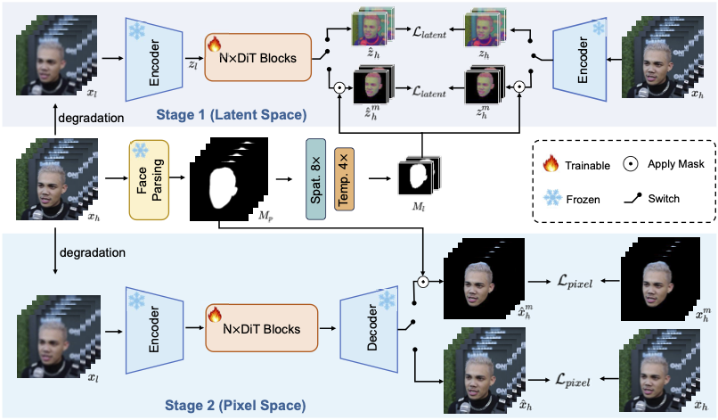

VividFace: Face-Aware One-Step Diffusion for High-Fidelity Video Face Enhancement
Visualization
Abstract
Video Face Enhancement (VFE) aims to restore high-quality facial details from degraded video sequences, enabling a wide range of practical applications. Despite substantial progress in the field, current methods that primarily rely on video super-resolution and generative frameworks face three fundamental challenges: (1) computational inefficiency caused by iterative multi-step denoising in diffusion models; (2) insufficient recovery of fine-grained facial textures; and (3) poor restoration quality due to the lack of high-quality face video training data. To address these challenges, we propose VividFace, a one-step diffusion framework that reformulates a text-to-video generation model into a single-step generator with switchable face-aware guidance that persistently focuses optimization on perceptually critical facial regions across both latent and pixel spaces. Furthermore, we propose a human-aligned MLLM-driven data curation pipeline that leverages the video understanding capabilities of Multimodal Large Language Models (MLLMs) and iteratively refines scoring criteria through lightweight human-in-the-loop calibration to align quality judgments with human perceptual expectations, yielding a high-quality face video dataset MLLM-Face90. Extensive experiments demonstrate that VividFace achieves superior performance in perceptual quality, identity preservation, and temporal consistency across both synthetic and real-world benchmarks, while achieving a $12\times$ inference speedup over state-of-the-art diffusion-based VFE methods.
Pipeline

Overview of our VividFace framework. VividFace is a face-aware one-step enhancement method built upon a flow-matching formulation. Middle: Facial masks are first extracted in the pixel space (Mp) and then geometrically aligned to the latent space (Ml) to match the VAE’s spatiotemporal compression. Top: In the first stage (Latent-space Optimization), the DiT model learns a single-step velocity field to transform the degraded latent zl into the restored latent ẑh. This process is supervised by our switchable face-aware guidance using Ml. Bottom: In the second stage (Pixel-space Refinement), the decoded video x̂h undergoes fine-grained optimization where the switchable guidance is applied using Mp to further enhance facial textures and perceptual fidelity.